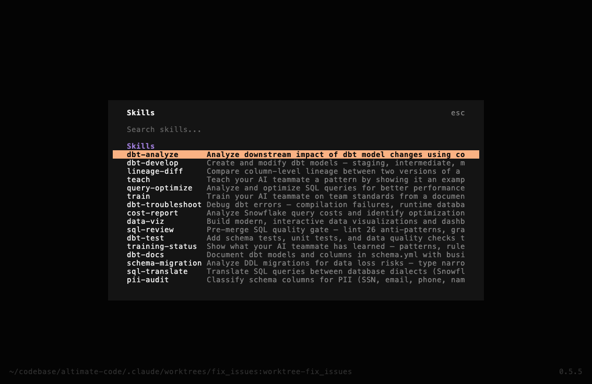
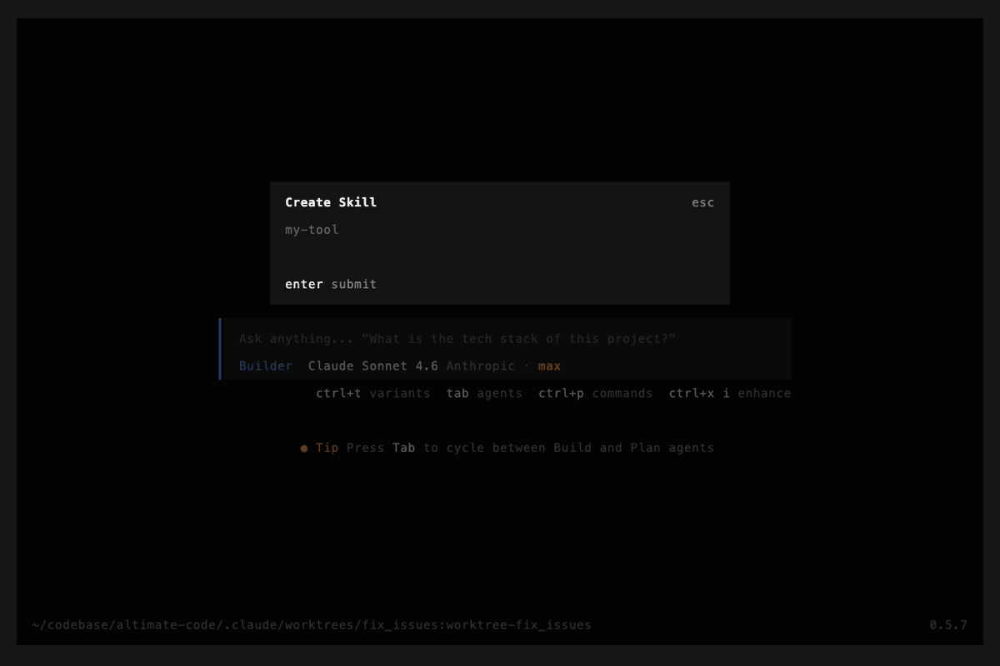
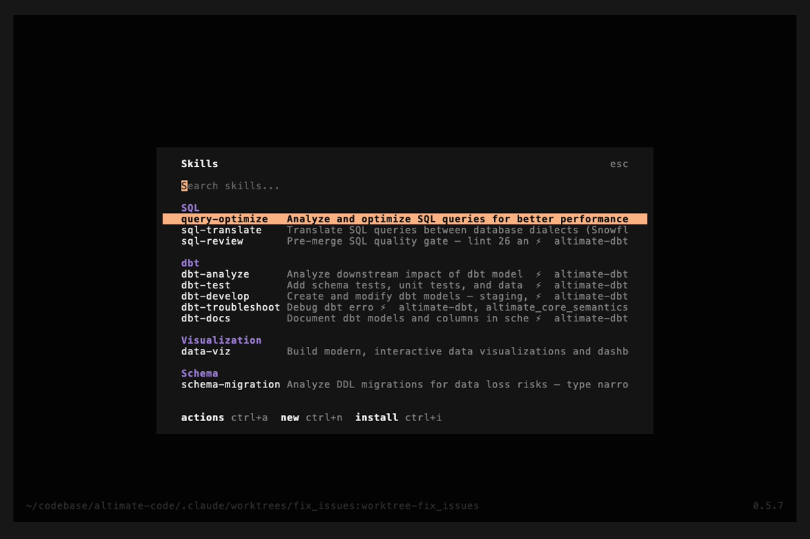

Agent Skills
Skills are reusable prompt templates that extend agent capabilities.
Skill Format
Skills are markdown files named SKILL.md:
---
name: cost-review
description: "Review SQL queries for cost optimization"
---
Analyze the SQL query for cost optimization opportunities:
1. Check for full table scans
2. Evaluate partition pruning
3. Suggest clustering keys
4. Estimate credit impact
5. Recommend cheaper alternatives
Focus on the query: $ARGUMENTS
Frontmatter Fields
| Field | Required | Description |
|---|---|---|
name |
Yes | Skill name |
description |
Yes | Short description shown in the agent's <available_skills> listing |
alwaysApply |
No | When true, the skill's full body is inlined into the system prompt at session start — the agent does not need to invoke the Skill tool to see it. See Auto-loading skills. |
applyPaths |
No | A glob (string) or list of globs. When at least one file under the worktree matches, the skill's full body is inlined into the system prompt at session start. Useful for project-aware skills (e.g. dbt_project.yml for dbt projects). |
Auto-loading skills
By default, skills are lazy-loaded: only the name and description appear in
the system prompt, and the full body is fetched only when the model invokes the
Skill tool. This keeps the prompt small but relies on the model choosing to
load the skill at the right moment.
For skills that should always be in context for a given kind of project (e.g. "every dbt session should see the dbt-development pitfalls"), declare one of:
---
name: dbt-develop
applyPaths:
- "dbt_project.yml" # matches if any dbt_project.yml exists in the worktree
- "**/dbt_project.yml"
description: "..."
---
or, for unconditional loading:
---
name: house-rules
alwaysApply: true
description: "..."
---
At session start, every matched skill body is prepended to the system prompt
(BEFORE the standard <available_skills> listing — placement matters: putting
the auto-loaded block first frames the bodies as binding "rules of the road"
rather than background reference) under:
<auto_loaded_skill name="<skill-name>">
... full skill body ...
</auto_loaded_skill>
The agent is told it does not need to invoke the Skill tool again to access
these — they are binding guidance for the session.
When to use
| Pattern | Mode |
|---|---|
| Project-type-specific guidance (dbt project, Snowflake project, BigQuery project) | applyPaths with the project marker file |
| Team conventions that apply to every session in a repo | alwaysApply: true in a project-level .opencode/skills/<skill>/SKILL.md |
| Skill that's only relevant when the user asks for it explicitly (e.g. test generation, cost review) | Leave both fields unset — keep lazy loading |
Context-size implications
When a skill auto-loads, its full body lands in the system prompt. A 250-line skill (~5K tokens) bumps the system prompt by roughly 25%. Two mitigators:
- Prompt caching amortizes the cost — the system prompt is the most-cached part of the request. Across a long agent loop (~26 steps per task is typical) the auto-loaded body is read from cache, not re-billed as fresh input.
- Match the glob narrowly —
applyPaths: "dbt_project.yml"only fires inside dbt projects; non-dbt sessions are unaffected. The mechanism is opt-in per skill and per worktree.
If you find auto-loaded bodies are crowding out task-specific context, prefer
applyPaths over alwaysApply so the skill only loads when the project
markers indicate it's relevant.
Discovery Paths
Skills are loaded from these locations (in priority order):
-
Project directories (project-scoped, highest priority):
.opencode/skills/.altimate-code/skill/.altimate-code/skills/
-
Global user directories:
~/.altimate-code/skills/
-
Custom paths (from config):
{ "skills": { "paths": ["./my-skills", "~/shared-skills"] } } -
External directories & remote URLs (if not disabled):
~/.claude/skills/~/.agents/skills/.claude/skills/(project, searched up tree).agents/skills/(project, searched up tree)
{ "skills": { "urls": ["https://example.com/skills-registry.json"] } }
Built-in Data Engineering Skills
altimate ships with built-in skills for common data engineering tasks. Type / in the TUI to browse what's available and get autocomplete on skill names.
| Skill | Description |
|---|---|
/sql-review |
SQL quality gate that lints 26 anti-patterns, validates syntax, and checks safety |
/sql-translate |
Cross-dialect SQL translation |
/schema-migration |
Schema migration planning and execution |
/pii-audit |
PII detection and compliance audits |
/cost-report |
Snowflake FinOps analysis |
/lineage-diff |
Column-level lineage comparison |
/query-optimize |
Query optimization suggestions |
/data-viz |
Interactive data visualization and dashboards |
/dbt-develop |
dbt model development and scaffolding |
/dbt-test |
dbt schema test generation |
/dbt-unit-tests |
Automated dbt unit test generation (v1.8+) |
/dbt-docs |
dbt documentation generation |
/dbt-analyze |
dbt project analysis |
/dbt-troubleshoot |
dbt issue diagnosis |
/teach |
Teach patterns from example files |
/train |
Learn standards from documents/style guides |
/training-status |
Dashboard of all learned knowledge |
CLI Commands
Manage skills from the command line:
# Browse skills
altimate-code skill list # table view
altimate-code skill list --json # JSON (for scripting)
altimate-code skill show dbt-develop # view full skill content
# Create
altimate-code skill create my-tool # scaffold skill + bash tool
altimate-code skill create my-tool --language python # python tool stub
altimate-code skill create my-tool --language node # node tool stub
altimate-code skill create my-tool --skill-only # skill only, no CLI tool
# Validate
altimate-code skill test my-tool # check frontmatter + tool --help
# Install from GitHub
altimate-code skill install owner/repo # GitHub shorthand
altimate-code skill install https://github.com/... # full URL (web URLs work too)
altimate-code skill install ./local-path # local directory
altimate-code skill install owner/repo --global # install globally
# Remove
altimate-code skill remove my-tool # remove skill + paired tool
TUI
Open the skill browser with ctrl+i when no other dialog is open, or type /skills in the prompt:

Keyboard shortcuts:
| Key | Action |
|---|---|
ctrl+i |
Open skill browser (when no dialog is open) / Install skill (when inside browser) |
| Enter | Use — inserts /<skill-name> into the prompt |
ctrl+a |
Actions — show, edit, test, or remove the selected skill |
ctrl+n |
New — scaffold a new skill + CLI tool |
| Esc | Back — returns to previous screen |
Create skill (ctrl+n):

Install skill (ctrl+i inside browser):

Adding Custom Skills
The fastest way to create a custom skill is with the scaffolder:
altimate-code skill create freshness-check
This creates two files:
.opencode/skills/freshness-check/SKILL.md— teaches the agent when and how to use your tool.opencode/tools/freshness-check— executable CLI tool stub
Pairing Skills with CLI Tools
Skills become powerful when paired with CLI tools. Drop any executable into .opencode/tools/ and it's automatically available on the agent's PATH:
.opencode/tools/ # Project-level tools (auto-discovered)
~/.config/altimate-code/tools/ # Global tools (shared across projects)
A skill references its paired CLI tool through bash code blocks:
---
name: freshness-check
description: "Check data freshness across tables"
---
# Freshness Check
## CLI Reference
\`\`\`bash
freshness-check --table users --threshold 24h
freshness-check --all --report
\`\`\`
## Workflow
1. Ask the user which tables to check
2. Run `freshness-check` with appropriate flags
3. Interpret the output and suggest fixes
The tool can be written in any language (bash, Python, Node.js, etc.) — as long as it's executable.
Skill-Only (No CLI Tool)
You can also create skills as plain prompt templates:
---
name: cost-review
description: "Review SQL queries for cost optimization"
---
Analyze the SQL query for cost optimization opportunities.
Focus on: $ARGUMENTS
$ARGUMENTS is replaced with whatever the user types after the skill name (e.g., /cost-review SELECT * FROM orders passes SELECT * FROM orders).
Skill Paths
Skills are loaded from these paths (highest priority first):
.opencode/skills/and.altimate-code/skill/(project)~/.altimate-code/skills/(global)- Custom paths via config:
{
"skills": {
"paths": ["./my-skills", "~/shared-skills"]
}
}
Remote Skills
Host skills at a URL and load them at startup:
{
"skills": {
"urls": ["https://example.com/skills-registry.json"]
}
}
Disabling External Skills
export ALTIMATE_CLI_DISABLE_EXTERNAL_SKILLS=true
This disables skill discovery from ~/.claude/skills/ and ~/.agents/skills/ but keeps .altimate-code/skill/ discovery active.
Duplicate Handling
If multiple skills share the same name, project-level skills override global skills. A warning is logged when duplicates are found.